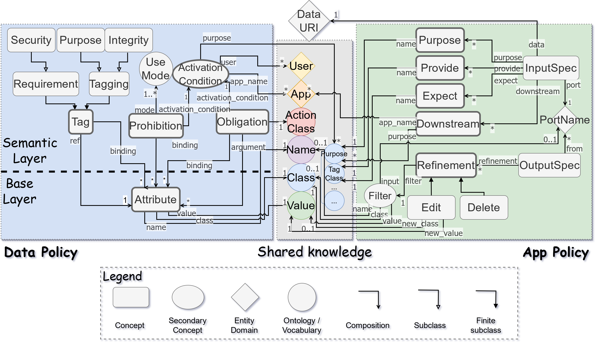
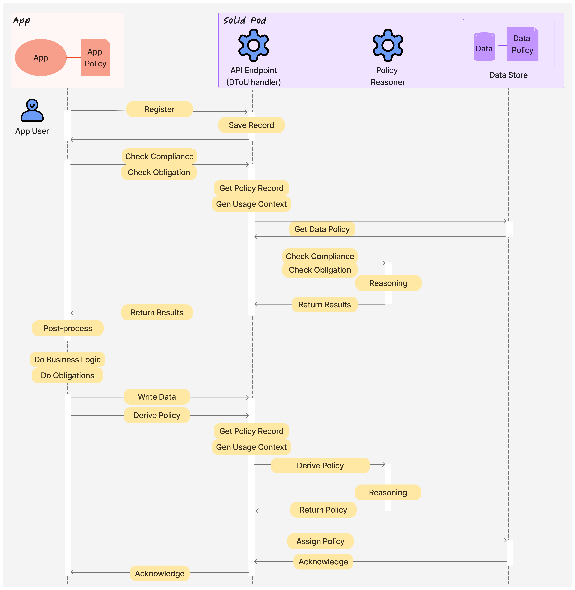

This document provides the specification and examples of the *perennial* DToU language, a language for describing the Terms of Use of Data, both for data providers (e.g. users) and data consumers (e.g. applications).
It accompanies the paper "Perennial Semantic Data Terms of Use for Decentralized Web" by Rui Zhao and Jun Zhao, at *ACM Web Conference 2024* (previously known as *International World Wide Web Conference*; WWW2024), doi [10.1145/3589334.3645631](https://dl.acm.org/doi/10.1145/3589334.3645631).
This is a design document and is not a W3C Technical Report. It is a work in progress and may be updated, replaced, or rendered obsolete by other documents at any time. Please cite the paper mentioned in the abstract if you refer to this work.
## Introduction
As the name implies, the perennial DToU language is a language for describing the Terms of Use of Data. It is designed to be used in a decentralized environment, especially decentralized Web, where data is shared between different parties, and where the terms of use of the data need to be clearly defined.
It is called *perennial* because it is designed to be long-lasting such that the expressed policies do not normally need to be recreated, and to produce derived policies, much like plants that will grow for multiple years in different environments and produce descendants.
There are different rationales and/or usage scenarios, that are described in the correcponding later section of this document. The language is designed to be flexible and extensible, so that it can be used in different contexts and for different purposes.

Structure of the DToU policy language. shows the key concepts of the data policy.
In general, there are two main parts of the language: the data policy, to be used by the data providers; and the app(lication) policy, to be used by the data consumers.
The data policy describes the terms of use set by the data provider, such as prohibition, obligation and conditions that any data consumer should follow. The app policy describes the terms of use set by the data consumer, such as the purpose of use, their promises, and third-party sharing policies.
They are explained in more details in the following sections.
In between the data policy and the app policy, there is a set of common vocabularies that can be used by both parties, ideally realized through a shared vocabulary or ontology. This set of common vocabularies is used to define common varying terms and concepts, such as the purposes. This document will not go into details of the common vocabularies, but will provide some examples of how they can be used.
In this document, we use the [[Turtle]] serialization of [[RDF-Schema]] to represent the DToU language constructs.
We will also briefly explain the reasoning mechanisms in this document, but will not go into details of the axioms and rules. Please refer to the [language and reasoner repo](https://github.com/renyuneyun/dtou-lang) (preferred) and/or the paper for more details. See also the [meta repo](https://github.com/OxfordHCC/solid-dtou) for more documents and complete information for this work.
### Namespaces
| Prefix | Namespace | Description |
|:------:|:-------------------------------------------:|:----------------------:|
| rdf | http://www.w3.org/1999/02/22-rdf-syntax-ns# | [[RDF-SCHEMA]] |
| xsd | http://www.w3.org/2001/XMLSchema# | [[XMLSchema11-2]] |
| dtou | urn:dtou:core# | DToU Language |
| voc | urn:dtou:vocabulary# | DToU Shared Vocabulary |
| ex | http://example.com/ | DToU Example |
## Data Policy {#data-policy}
### Key Concepts of Data Policy
Conceptually, the data policy has two layers: the base layer and the semantic layer.
The base layer uses the mechanism called "attributes", which are information carried by the data policy, and are referenced by the concepts in the semantic layer, for different meanings.
The attributes themselves do not have semantic meanings for the policy.
The semantic layer contains several different concepts, such as "prohibition", "obligation", "tags" (e.g. "purpose"), etc. These concepts are used to define the meaningful terms of use of the data, and hence called the "semantic" layer.
The following sections explain them in more details.
### Attribute
An attribute is a tuple of a name, a type and a value.
### Tag
Tags represent special information/labels that comes with the data (policy). They are classified as two main *categories*, each with their own semantics:
1. Requirement: The information/labels that the data (policy) demans, such that the data consumer (app) must satisfy.
2. Tagging: The information/labels that the data (policy) contains/provides, such that the data consumer (app) may request.
They can have their subclasses, with their own meanings. The meanings are informative, while the reasoning follows the same rule.
To pass the compliance checking, the data's corresponding *requirement* must present in the app's policy (as *provide*), while the app must not *expect* a *tagging* that does not exist in the data policy. The tag category (of the class tree) must also match.
Equivalently, the *requirement* must be a subset of the *provide* in (the corresponding part in) the app policy, and the *tagging* must be a superset of the *expect* in (the corresponding part in) the app policy.
The core language has three common subclass categories of tags:
- Requirement
- **Security**
- Tagging
- **Integrity**
- **Purpose**
#### Core categories
The common categories represent the following intuition for their meaning:
1. Requirement
- Security: The measures or degrees of security that the data (policy) demands.
2. Tagging
- Integrity: The status of integrity of the data (policy) that the data (policy) provides.
- Purpose: The purpose of the data (policy) that the data (policy) provides.
### Prohibition
A prohibition (statement) is a restriction on the data usage, as defined by the data provider. The reasoner will verify if the data consumer's policy (app policy) violates the prohibition.
A prohibition is triggered by an *activation condition*, is for a specific *use mode*, and may have *bindings* to attributes.
### Obligation {#data-policy__obligation}
An obligation (statement) specifies additional actions that the data consumer should perform, under certain conditions. The reasoner will trigger related obligations based on the situation as reflected from the data consumer's policy (app policy).
An obligation (statement) has an *obligation definition*, is triggred at a specific *activation condition*, and may have *bindings* to attributes.
An *obligation definition* specifies the actual action that the data consumer should perform (when the obligation gets triggered). It has an *action class*, and may have *arguments*, which are in turn references to *attributes*.
### Data policy set
The policy terms above only represent a single element of the policy. In practice, a data policy is a set of such terms, which are combined together to form a complete policy, which is the *data policy set*.
The data policy set should enumerate all attributes, prohibitions, obligations, and tags that the data provider wants to express. Referenced attributes (e.g. those used for tags) must also be included in the set.
### Data policy association
Data policy association describes the association between the data and the data policy set. It is used to associate the data with the policy, and is required in the reasoning process.
#### Additional note for data policy association
In principle, because the data policy association is only necessary during reasoning, the policy storage may not need to store the association. However, in our prototype, it is stored for the convenience of the reasoning process, such that it can directly retrieve the policy document and use it in the reasoning process.
## App Policy
### Key Concepts of App Policy
The app policy specifies how the data consumer (usually the application) intends to use the data it receives/retrieves. It is used to define the terms of use set by the data consumer, such as the purpose of use, their promises, and third-party sharing policies.
Often, an app will not only consume input data, but also produce output data. The app policy also reflects how they *transform* the data in a high-level way reflected in the policy.
The app policy contains three main blocks:
1. App information: describing general information about the app that is relevant for policy checking.
2. Input specification: describing the terms of use of the input data, and which input data it takes.
3. Output specification: describing how the app transforms input to output, reflected in the policy.
The output speficiation is mainly consulted for policy derivation, while the rest are mainly for other tasks of policy reasoning (compliance check and obligation check).
### App information
The app information are directly expressed through predicates and objects of the `dtou:AppPolicy` entity. It contains the following information:
- `dtou:name`: The name of the application.
### Input specification
An application may take multiple data as input, each of which is conceptually from a *port*, having a corresponding input specification (denoted as type `dtou:InputSpec`). The input specification describes the app's terms of use of the corresponding input data, and related other information.
It has the following contents:
- `dtou:data`: The URI of the data that the app takes as input.
- `dtou:port`: The information of the port, especially the name of the port, used to identify.
- `dtou:provide`: The tags that the app *provides* to use the data.
- `dtou:expect`: The tags that the app *expects* from the data.
- `dtou:purpose`: The purposes that the app uses the data for, specially separated from `dtou:expect`.
- `dtou:downstream`: The downstream that the app will share the data with.
As special cases, `dtou:security` and `dtou:integrity` can be used to specify the corresponding *security* and *integrity* tags, which are to be interpreted as if providing the corresponding `dtou:provide` and `dtou:expect`.
#### Port
A port (`dtou:Port`) denotes a conceptual place where the app takes input from or produces output of. It is uniquely identified within the application.
To identify a port, we use the unique `dtou:name` of it, represented as a string.
#### Tag
The app policy specifies the tags that the app provides and expects from the input data. They are used in conjunction with the tags in the data policy to check the compliance of the app policy. Corresponding to tags in data policy, the tags are of two main categories (requirement and tagging), and can use their subclasses. Different from tag in data policy, the tags in app policy are used to specify the app's promise/provide (corresponding to *requirement*) and expectations (corresponding to *tagging*) on the data.
#### Downstream
The downstream (`dtou:DownstreamSpec`) specifies what external bodies with which the app will share the data taken from this input. A downstream specification can contain the following information:
- `dtou:app_name`: The name of the downstream, usually an application.
- `dtou:purpose`: The purpose that the downstream will use this data for.
The downstream is expected to have the same *provide* and *expect* tags as the current application. The application developer is responsible to guarantee they are correctly listed in the input specification.
### Output specification {#app-policy__output-spec}
An output specification (`dtou:OutputSpec`) describes how the app transforms the input policy to output policy, reflecting how the app transforms input data to output data, of a particular output *port*.
It specifies the following information:
- `dtou:port`: The identity of the output port.
- `dtou:from`: The input (ports) that the output (port) is derived from.
- `dtou:refinement`: How the app transforms the input to output, in a high-level way.
An output can be derived from multiple inputs, and have multiple refinements. The refinement describes how the information is transformed from input to output, reflected as the transformation of attributes.
The output policy is formed by first copying and marging from the input policies (of all `dtou:from` ports), and then applying the refinements.
#### Refinement
Refinements have two types, representing different semantics:
- `dtou:Delete`: The matching attribute is deleted (when producing this output).
- `dtou:Edit`: The matching attribute is modified (when producing this output).
Each refinement also contains a filter (`dout:Filter`) to match the attributes to be refined.
##### Filter
A filter describes the conditions how an attribute is matched. It can match the attribute by its `dtou:name`, `dtou:class`, and `dtou:value`. Any attributes matching all the conditions are considered to be matched. If a field is not specified, it is considered to be a wildcard.
##### Delete
The `dtou:Delete` refinement only has one field, `dtou:filter`, which is the filter to match the attributes to be deleted. When an attribute is deleted, not only the attribute itself is removed from the output policy, but also all the terms that have bindings to it are removed.
##### Edit
The `dtou:Edit` refinement has `dtou:filter` as the matching condition, and also has two additional fields:
- `dtou:new_class`: To assign a new class to the attribute.
- `dtou:new_value`: To assign a new value to the attribute.
When an attribute is edited, the attribute itself is modified with the new class and new value (if specified). At least one of `dtou:new_class` or `dtou:new_value` must be specified.
### App policy set
Similar to data policy set, app policy segments needs to be bundled together to form a complete policy, which is the *app policy set*.
## Usage Context
Apart from the data policy and app policy, there are other contextual information that are used during DToU reasoning. They are dynamic information that are not known at the time of policy creation, but are necessary for the reasoning process.
- `dtou:user`: The user that is using the app.
- `dtou:time`: The time when the reasoning is performed.
They are dynamically created by the policy engine, and are combined with the app policy for reasoning.
## Reasoning
The aforementioned policy sets are eventually meant to be used for reasoning. There are three main reasoning tasks:
1. Compliance check: To check if the app policy complies with the data policy.
2. Obligation check: To check if any obligation is triggered.
3. Policy derivation: To derive the output policy from the input policy.
To perform reasoning, the reasoner will first need to identify the correspondance of the data policy set and the input specification of an app policy. It will need to refer to the contextual information if necessary. The reasoner will then perform the following tasks as required.
### Compliance check
To check the compliance of the app policy with the data policy, the reasoner will check every input specification's consistency with the corresponding data policy. As detailed in [[[#data-policy]]], it will check whether:
- The app policy provides all the requirements of the data policy.
- All expects exist as taggings in the data policy.
- Any prohibition is violated/triggered, by checking if any activation condition is met.
- All downstreams are consistent with the data policy.
### Obligation check
During obligation check, the reasoner will check if any obligation is triggered by the app policy (see also [[[#data-policy__obligation]]]). If an obligation is triggered, the obligated action and corresponding attributes (in the arguments) are copied, and these activated obligations are stored and returned.
### Policy derivation
For policy derivation of an output port, the reasoner will first copy and merge the input policies, and then apply the refinements to derive the output policy, according to the rules specified in [[[#app-policy__output-spec]]].
## Shared vocabulary
The shared vocabulary (shared knowledge) is not a focus of this specification, and thus we do not provide a detailed description of it. However, as illustrated in [[[#lang-structure]]] (*shared knowledge*), the shared vocabulary is used to define common terms and concepts that are used in both the data policy and the app policy, and are of several types. Each of them may be a vocabulary of its own.
Ideally, the shared vocabulary should be realized through a shared ontology, which can be used by both parties to define the terms and concepts. Through OWL ([[OWL-Ref]]) reasoning, the reasoner can then infer the relationships between the terms and concepts in the vocabulary, even if the two parties did not explicitly gain consensus when specifying the policies.
## Solid Integration
We have created a prototype implementation of the DToU language reasoner, integrated with the Solid platform. They can be found in the follow repositories: [Solid service with DToU reasoning capability](https://github.com/renyuneyun/CommunitySolidServer), and [Solid App with DToU](https://github.com/renyuneyun/dtou-demo-app).
The interaction is performed through an additional API endpoint `/dtou`, following a custom protocol. In general, the interaction is described in .

Sequence diagram for custom DToU protocol.
In the implementation, the data policy is stored in the same-named resource file with an additiona `.dtou` suffix. App policy is sent to the server from the App dynamically during policy registration. Usage context is generated automatically by the server, by identifying information from the request (user's WebID) and system (time).